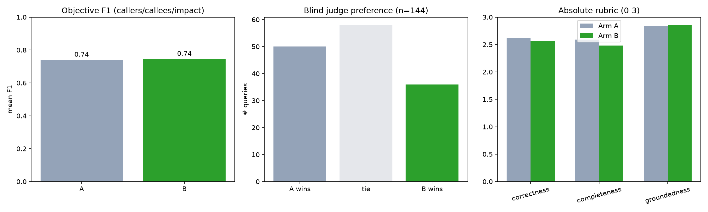
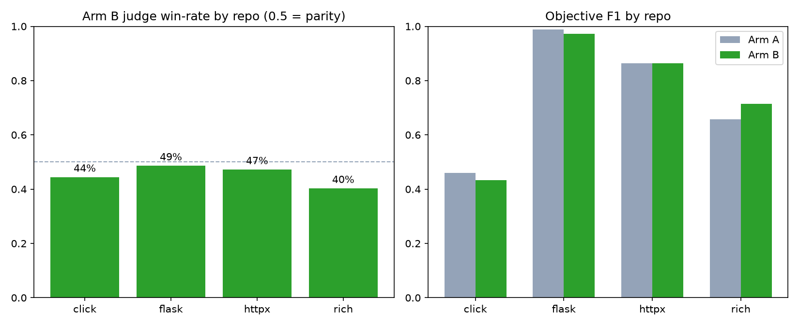
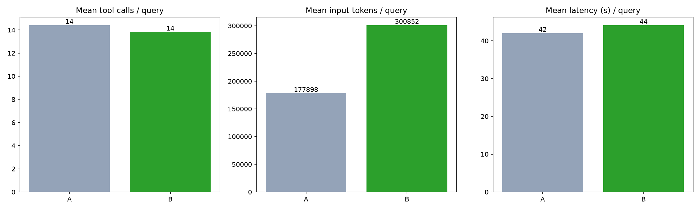

Real-LLM evaluation: the Codex CLI (codex exec, model gpt-5-codex) answers the same code-understanding questions twice per query — once with its native tools only (Arm A), once with the same tools plus the ContextAI contextai-graph MCP server (Arm B). Codex decides itself which tools to call. See METRICS.md for the full scoring contract.
Arm B win-rate over Arm A (ties = 0.5): 45.1% across 144 judged queries — A wins 50, ties 58, B wins 36.

| Arm | n | mean F1 |
|---|---|---|
| A | 87 | 0.740 |
| B | 87 | 0.745 |
| Query type | Arm A F1 | Arm B F1 |
|---|---|---|
| callees | 0.805 | 0.797 |
| callers | 0.844 | 0.831 |
| impact | 0.520 | 0.565 |
| Arm | Correctness | Completeness | Groundedness | Mean |
|---|---|---|---|---|
| A | 2.62 | 2.59 | 2.84 | 2.69 |
| B | 2.57 | 2.48 | 2.85 | 2.63 |
The headline numbers average over all 4 repos; per-repo results vary more than the average suggests, and no single repo shows Arm B clearly ahead — including rich, the largest/most complex codebase, where a code graph would intuitively help the most.

| Repo | Judge: A / tie / B | B win-rate | F1 (A) | F1 (B) | Rubric (A) | Rubric (B) |
|---|---|---|---|---|---|---|
| click | 13 / 14 / 9 | 44% | 0.460 | 0.432 | 2.56 | 2.54 |
| flask | 9 / 19 / 8 | 49% | 0.989 | 0.973 | 2.78 | 2.73 |
| httpx | 13 / 12 / 11 | 47% | 0.864 | 0.864 | 2.82 | 2.81 |
| rich | 15 / 13 / 8 | 40% | 0.657 | 0.714 | 2.58 | 2.46 |
| Type | A / tie / B | B win-rate |
|---|---|---|
| callees | 5 / 21 / 7 | 53% |
| callers | 11 / 12 / 7 | 43% |
| definition | 4 / 4 / 4 | 50% |
| feature | 7 / 9 / 5 | 45% |
| flow | 14 / 3 / 7 | 35% |
| impact | 9 / 9 / 6 | 44% |
Notably, flow (multi-hop execution tracing) — the type where a pre-built call graph should intuitively help most — has Arm B's lowest win-rate of any type.
Two distinct, verified mechanisms explain this, and they cut in different directions for how much to trust the headline win-rate.
Manual spot-check of a flow query Arm B "lost" (rich-02, repeat 1): the judge (o3) penalized Arm B for stating the print buffer is "thread-local," calling this a factual error ("the buffer is an attribute on the Console instance, not thread-local"). Checking Rich's actual source shows Arm B was correct and the judge was wrong:
class ConsoleThreadLocals(threading.local):
"""Thread local values for Console context."""
...
@property
def _buffer(self) -> List[Segment]:
"""Get a thread local buffer."""
return self._thread_locals.buffer
This is one manually-verified case, not an automated audit of all judged queries — but it demonstrates that some fraction of the reported win/loss split is judge noise rather than a real quality gap. With 58/144 judged queries already ties, the true gap between arms is likely smaller than the raw 45.1% vs. 54.9% split suggests.
First, a sanity check on Arm B's setup itself: across all 144 successful Arm B runs, 75 used both native and ContextAI tools together, 69 used ContextAI tools only (by choice, not necessity), and 0 were missing native tool access — i.e. Arm B never lost capability relative to Arm A; it only ever gained the option to use ContextAI's tools. Any quality gap is therefore about how the extra tool was used, not about Arm B being handicapped.
Across the 87 paired (query, repeat) cases with an objective answer key, Arm B's predicted symbol set was a strict subset of Arm A's in 19 cases, versus only 1 case the other way around. In other words, when one arm's answer was a pure subset of the other's (never contained anything the other missed), it was Arm B's more often — the signature of trusting a single structured source over exhaustive verification.
ContextAI's graph is a static-analysis snapshot with known blind spots — the MCP server itself exposes a list_gaps tool specifically for unresolved_calls and dynamic_gaps (decorators, dynamic dispatch, etc. a static analyzer can't always resolve). When Codex treated get_context/find_node's returned edges as the complete answer instead of cross-checking with a grep pass, it inherited those blind spots. Grep-based Arm A doesn't have this particular blind spot, because it searches exhaustively by construction.
Examples (click-02 r0, click-02 r1):
click-02 r0:
gold: ['core.py::_main_shell_completion', 'core.py::exit', 'core.py::invoke', 'core.py::make_context', 'exceptions.py::Abort', 'exceptions.py::show', 'utils.py::PacifyFlushWrapper', 'utils.py::_detect_program_name', 'utils.py::_expand_args', 'utils.py::echo']
Arm A: ['core.py::_main_shell_completion', 'core.py::exit', 'core.py::invoke', 'core.py::make_context', 'exceptions.py::show', 'utils.py::_detect_program_name', 'utils.py::_expand_args', 'utils.py::echo']
Arm B: ['core.py::_main_shell_completion', 'core.py::invoke', 'core.py::make_context', 'utils.py::_detect_program_name', 'utils.py::_expand_args', 'utils.py::echo'] (strict subset of A's answer)
click-02 r1:
gold: ['core.py::_main_shell_completion', 'core.py::exit', 'core.py::invoke', 'core.py::make_context', 'exceptions.py::Abort', 'exceptions.py::show', 'utils.py::PacifyFlushWrapper', 'utils.py::_detect_program_name', 'utils.py::_expand_args', 'utils.py::echo']
Arm A: ['core.py::_main_shell_completion', 'core.py::exit', 'core.py::invoke', 'core.py::make_context', 'exceptions.py::show', 'utils.py::_detect_program_name', 'utils.py::_expand_args', 'utils.py::echo']
Arm B: ['core.py::_main_shell_completion', 'core.py::invoke', 'core.py::make_context', 'utils.py::_detect_program_name', 'utils.py::_expand_args', 'utils.py::echo'] (strict subset of A's answer)
Takeaway: more tool capability doesn't guarantee better use of it. A tool that returns a fast, confident, structured answer can let an agent skip the slower verification step it would otherwise do — and that answer can be silently incomplete. This suggests ContextAI's tools (or prompting around them) should nudge agents to treat the graph as a lead to verify for exhaustive-enumeration questions ("who calls X"), not a final answer.

| Arm | n | mean tool calls | mean MCP calls | mean input tokens | mean output tokens | mean latency (s) | % used ContextAI |
|---|---|---|---|---|---|---|---|
| A | 144 | 14.4 | 0.0 | 177898 | 2734 | 42.0 | n/a |
| B | 144 | 13.8 | 10.0 | 300852 | 2534 | 44.1 | 100% |
Total runs: 288, failed: 0.
codex exec, model gpt-5-codex), not a raw OpenAI chat completion — chosen so the comparison reflects a real, widely-used coding agent rather than a custom-built minimal tool loop.o3 (a distinct OpenAI model from the answerer), blind, pairwise order randomized, given the objective answer key as reference when available.--dangerously-bypass-approvals-and-sandbox. Codex's non-interactive mode currently auto-cancels MCP tool call approvals instead of allowing them (see openai/codex#24135), so Arm B needs the bypass to use ContextAI at all; it is applied uniformly to Arm A too so the only difference between arms is tool availability, not sandboxing. This is a contained, documented trade-off: read-oriented questions against pinned, throwaway clones.contextai-graph MCP server registered in Codex's own config) — never by the harness's orchestration code directly.